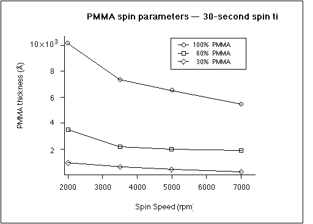

X-ray resist -- PMMA

We (M.I.T. physics department) use PMMA -- polymethylmethacrylate -- as our photoresist. There are two molecular weights commonly available; we use 6%, under the brand name KTI 950K. The PMMA is mixed with chlorobenzene to achieve the desired viscosity. We use three different mixtures in the lab. Here is an outline of the steps used in preparing the PMMA for spinning.
1) Teflon containers and teflon-coated magnetic stirrers to be used are first etched with piranha etch (H2O2:H2SO4). Be careful: PMMA plus piranha etch is rumored to be a nasty combo.
2) Clean pipettes for measuring the PMMA and chlorobenzene, along with two beakers to hold the PMMA and chlorobenzene that will be mixed. DO NOT STICK PIPETTES INTO EITHER BOTTLE! These items are cleaned by:
(a) flushing with acetone;
(b) flushing with isopropyl alcohol;
(c) flushing with DI H2O; or
(d) drying with nitrogen gas.
3) Use a mass balance to achieve the desired ratio of chlorobenzene to PMMA.
4) Place magnetic stirrer in the bottle and place the bottle on a magnetic stirrer for at least 2 hours. This long is only necessary for the first time. Before use, spin for about 5 minutes.
5) Measure spin thicknesses of PMMA via the following steps.
(a) Get solvent-cleaned silicon substrates.
(b) Set spinner for desired rpm and time.
(c) Place substrate on the spinner.
(d) Place one drop on spin bowl to clean the tip and then 3 drops on substrate to cover.
(e) Quickly activate spinner to prevent drying of liquid before spinning starts.
(f) Remove substrate and bake for 15 minutes at 160deg.C.
(g) Scratch off PMMA on substrate using a toothpick and measure the depth.
The following table shows the spin parameters for the three mixtures of PMMA. Note that every batch is unique and should be tested.
PMMA spin parameters -- thickness in Å -- 30-second spin time
Spin Speed (rpm) 100% PMMA 60% PMMA 30% PMMA
2000 10,200 3,300 1,200
3500 7,400 2,000 1,000
5000 6,500 1,800 900
7000 5,400 1,600 800
Prior to writing the PMMA is baked at 160deg.C for 4 hours.